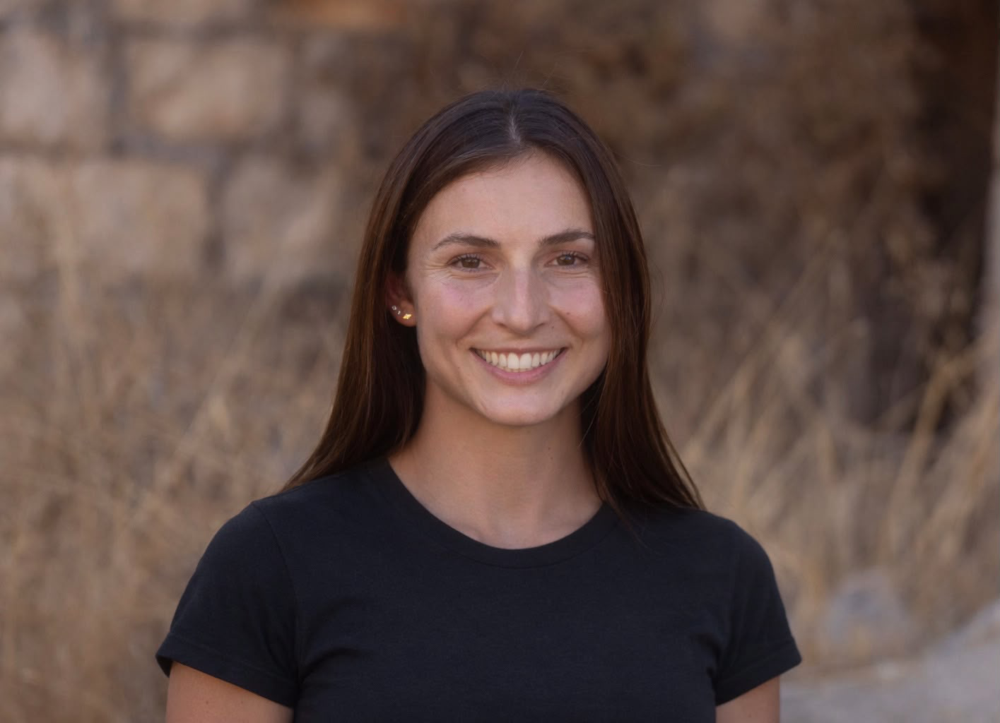
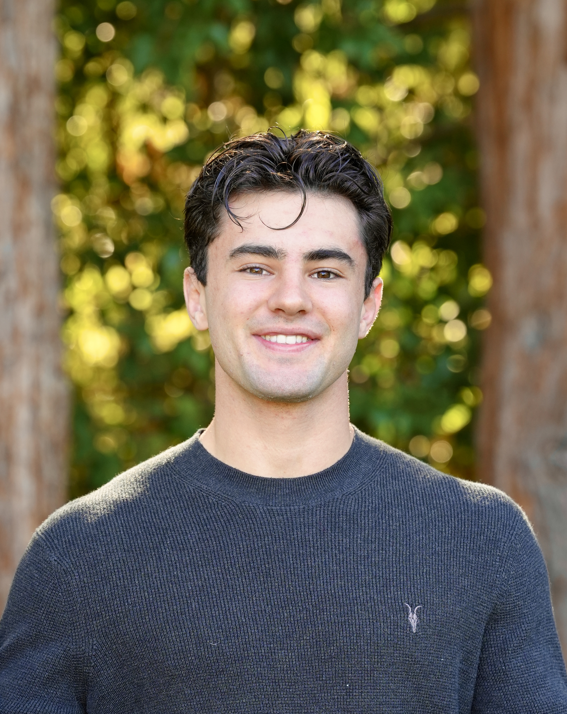

01
X Chua
CEOLeads product and partnerships, and how the network is deployed and commanded.
Low-cost listening nodes that detect drones at take-off and point to where they came from.
Each node listens on its own. Together, a field of nodes turns rotor noise into a location.
Three microphones pick up rotor and engine noise.
On-node models confirm a drone and name its type.
Bearings from several nodes cross at the launch site.
A 30-byte cue reaches headquarters over a LoRa mesh.
Launch-site cues for brigade and division targeting cells.
Drones and their launch points along approach corridors.
Cross-border launch sites, found by a passive sensor.
Operators, engineers and test ranges: we want to hear from you.
Early, passive warning of where enemy drones take off, so ground forces can act before the next wave.
Aircraft are hard to find in the air. Air forces were beaten on the ground.
Drones are no different. Find where they launch, and the next wave never takes off.
Nodes sit 0–10 km past the front line, listening toward launch areas 10–35 km deep.
Launches sit beyond what rear-area sensors can hear.
Placed by a recon team or dropped by a carrier drone.
Passive, hard to spot, meshed, and under $200.
ATHENE finds and reports. Other systems act.
Map stakeholders and interview end users.
Validate problem statements with a champion.
Audio prototype and a digital twin of the field.
Proof-of-concept demo to an end user.
An expendable acoustic sensor that hears drones at launch. Dropped from a drone or placed by hand.
Transmits a short encrypted report only when it hears a drone.
Finds the bearing and height of the sound.
Unattended on one battery when air-dropped.
Commercial parts. Wipes its data if lost.
Several nodes stack in one launch pipe on a carrier drone.
Nodes fit a pipe about 50 mm wide.
Battery end leads. A streamer keeps the fall straight.
Low battery weight keeps the tripod upright.
Light and expendable. Goes where people cannot.
Mics raised 1.5–2 m for the best hearing.
Site power, no battery limit.
Design targets for a 5 × 5 km deployment. We measure them on our first prototypes this fall.
Every drone should reach at least two nodes, so spacing matches hearing range (planned 100–500 m). Real fields are denser near likely launch sites.
One gateway per 20 deployed nodes, rounded up. Cost covers listening nodes only; gateways are additional. Gateway markers are illustrative.
Targets and estimates from our analysis. Not field-test results.
Built at Stanford in Innovating for Defense, with the Gordian Knot Center for National Security Innovation.
Leads product and partnerships, and how the network is deployed and commanded.
Builds the digital twin, signal processing and decision models.

03Runs business development, research and the draft field doctrine.

04Leads hardware: the acoustic sensor, its power system and delivery.
Operators, engineers, test ranges and partners. Tell us what you see in the field.
Yes. A node only listens, and transmits a short encrypted report only when it hears a drone.
Yes. They send no radio signal, but every propeller drone makes noise.
No. ATHENE finds where drones launch and cues the units and systems that act.
Placed by hand, or dropped from a launch pipe on a carrier drone. The mission planner chooses where.
Interviewing end users and building the first audio prototype. Demo planned for December 2026.